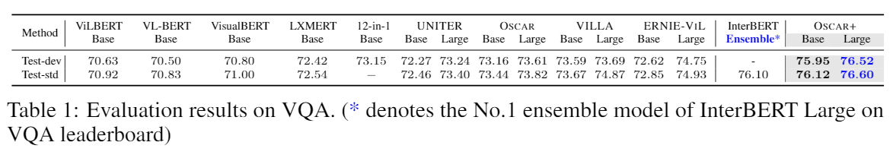
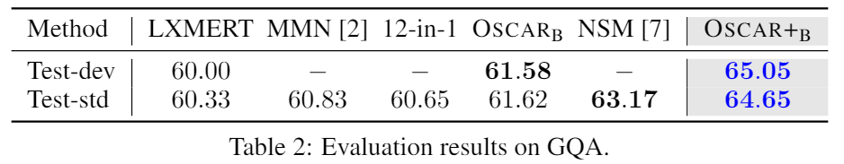
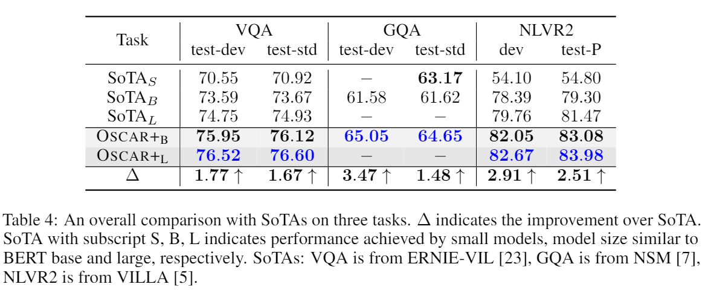

OSCAR+
Xiujun Li
Introduction
Large-scale pre-training methods of learning cross-modal representations on image-text pairs are becoming popular for vision-language tasks. Most of previous work focused on cross-modal fusion, in this paper, we present OSCAR+, a new vision-language pre-training with enhanced object-centric visual representations, and create the new state-of-the-art (SoTA) results on three vision-language understanding tasks.
Results
-
Task 1: VQA
As shown in Table 1, a single OSCAR+ model can even beat the No.1 ensemble model (InterBERT large) on the VQA leaderboard.
-
Task 2: GQA
Pre-trained models dominate most tasks with large margins, except GQA, which requires complicated reasoning and is a yet-to-be conquered task for pre-trained models, and its previous SoTA model --- neural state machine (NSM) relies on a strong structural prior. As shown in Table 2, we are the first to demonstrate that pre-trained model can work well on GQA even without sophisticated reasoning components.
-
Task 3: NLVR2
Similarly, on the NLVR2 task, OSCAR+ can outperform previous best SoTA large models.
-
SoTA Comparison
Table 4 shows an overview of OSCAR+ on all tasks compared with previous SoTAs: OSCAR+ outperforms previous SoTA models on all three tasks, often by a significantly large margin,
Conclusion
We present OSCAR+, a new vision-language pre-training model with enhanced vision features, and substantially uplift the state-of-the-art results on three established vision-language understanding tasks. We show that vision matters significantly in vision-language models.